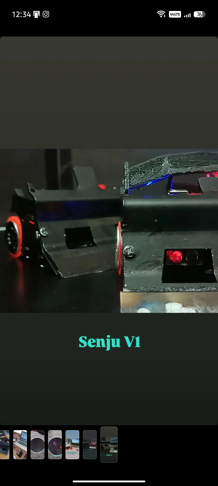
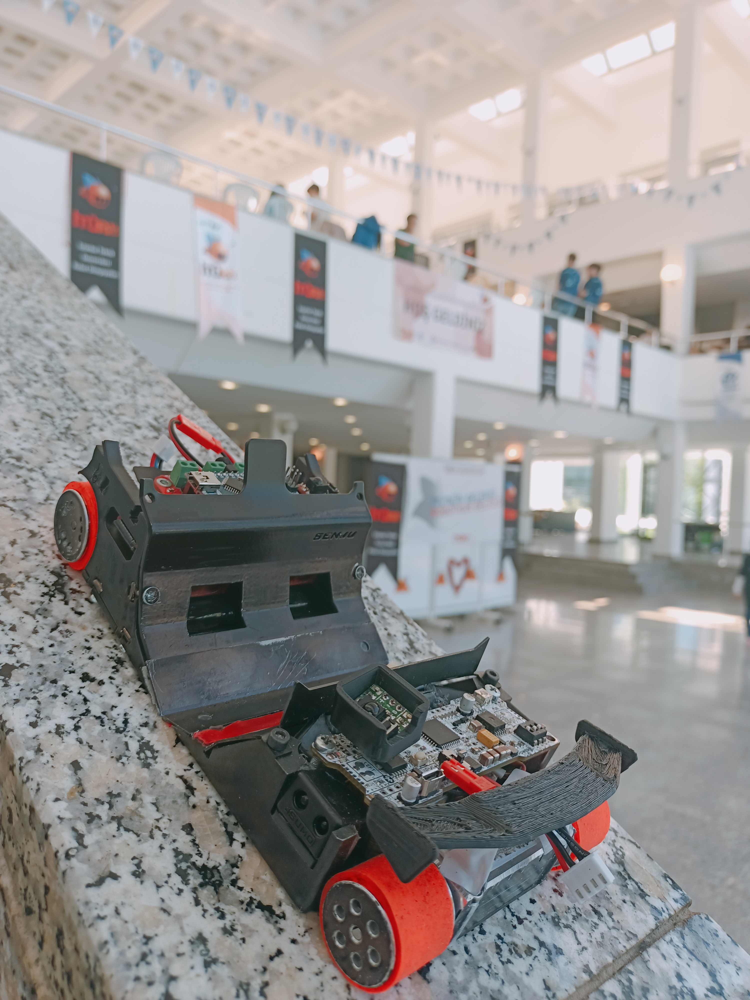
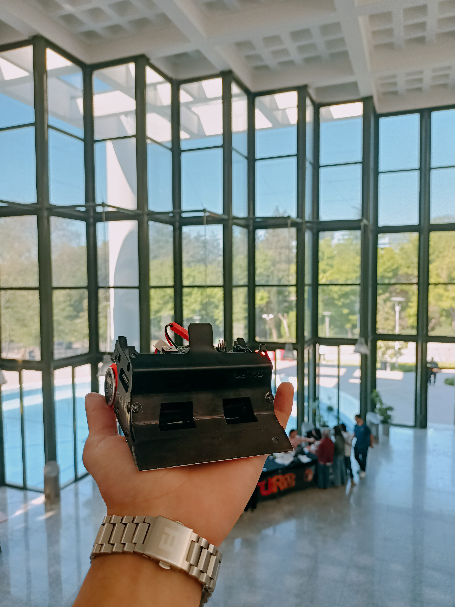
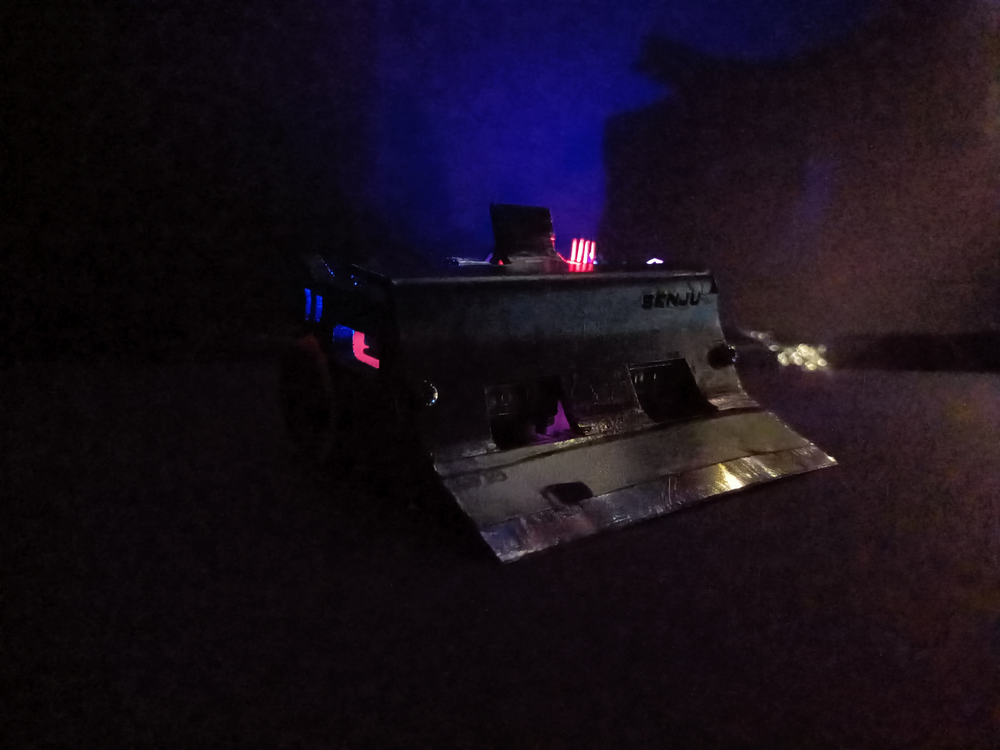

STEM · ROBOTİK · YAZILIM
FIXTIN
Türkiye'de gençler tarafından kurulan bağımsız bir teknoloji ve robotik takımı. Mini sumo ringinden Pardus çekirdeğine kadar, ürettiğimiz her şeyi kendi ellerimizle tasarlıyoruz.
Kimiz
Bağımsız bir gençlik robotik takımı
Fixtin, Türkiye'de genç geliştiriciler tarafından kurulmuş, kendisini STEM alanında geliştirmeyi hedefleyen bağımsız bir teknoloji ve robotik takımıdır. Yazılım, robotik, mühendislik ve elektronik üzerine yoğun şekilde proje geliştiriyoruz.
İki koldan ilerliyoruz: yarışma ringinde mücadele eden mini sumo robotlarımız, ve arka planda çalışan Pardus / Linux geliştirmelerimiz. İkisi de aynı yerden besleniyor — merak ve deneme yanılma.

Mini Sumo
Ringde kazanılan başarılar
Mini sumo robotlarımızı sıfırdan tasarlıyor, baskısını alıyor ve pilotluğunu kendimiz yapıyoruz. İşte bu sezonun sonuçları.




Pardus & Linux
Yerli işletim sistemi üzerine geliştirme
Ringin dışında, ekibimiz Pardus ve Linux odaklı geliştirmeler yapıyor: paketleme, sistem entegrasyonu ve gündelik kullanımı kolaylaştıran araçlar. Amacımız, Pardus'u okulda ve evde daha erişilebilir kılmak.
File Launcher'ı İnceleAraç
File Launcher V2.4
Pardus üzerinde .exe ve .jar dosyalarını terminale tek satır kod yazmadan, çift tıkla çalıştıran sürücü ve entegrasyon paketi.
- Sıfır terminal kullanımı — kurulumdan çalıştırmaya kadar hiç kod yazmanız gerekmez.
- Çift masaüstü desteği — hem Pardus GNOME hem de Pardus XFCE ile tam uyumlu.
- Otomatik motor eşleme — Windows uygulamaları Wine'a, Java uygulamaları Java çalıştırma motoruna otomatik bağlanır.
-
Paketi indirin
"Pardus İçin İndir" butonuna basarak.debdosyasını kaydedin. -
Kuruluma başlayın
İnenfile-launcher_2.4-1_all.debdosyasına çift tıklayın. -
Paketi kurun
Açılan Pardus Paket Kurucu penceresinde "Paketi Kur" butonuna basıp şifrenizi girin. -
Bağımlılıklar otomatik yüklenir
Sistem gerekli Python, Wine ve Java bağımlılıklarını kendi kurar. -
Kullanmaya başlayın
Herhangi bir.exeveya.jardosyasına sağ tıklayıp File Launcher ile açın.